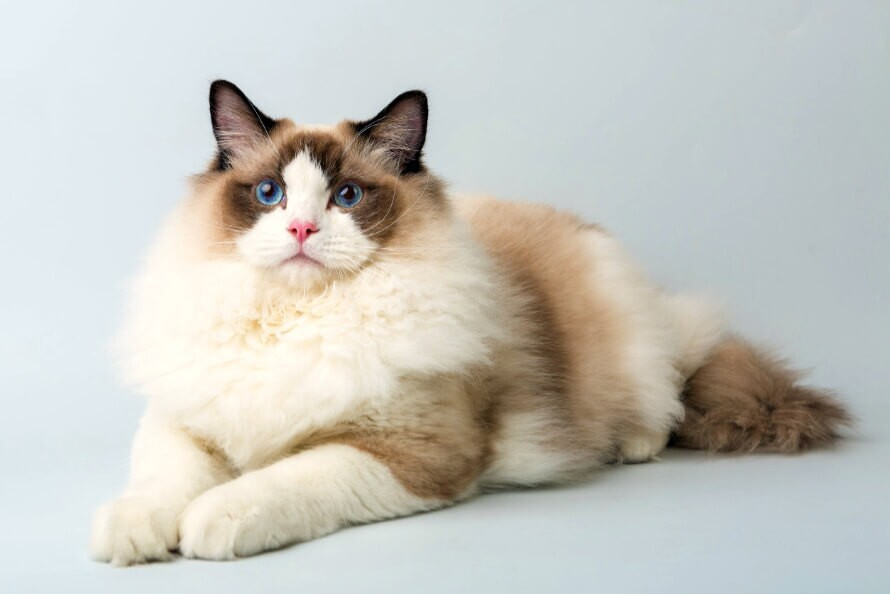

A delfin a fogascetek közé tartozó egyes vízi emlősállatok összefoglaló neve. A delfinek halakkal táplálkoznak. Különleges képességük, hogy a visszhang alapján tájékozódnak. Összesen 50 fajuk hét családot alkot: a tengerekben élő delfineket három családba soroljuk az édesvízi folyamidelfinek öregcsaládjába pedig további négy delfincsalád tartozik. A delfinek legközelebbi rokonai a szintén a fogascetek közé tartozó nagy ámbráscet, és csőröscetfélék.
A macska, más néven házi macska (Felis silvestris catus) kisebb termetű húsevő emlős, ami a ragadozók rendjén belül a macskafélék (Felidae) családjának Felis neméhez és vadmacska (Felis silvestris) fajához tartozik. A vadmacska alfaja. Ügyes ragadozó, több mint 1000 faj tekinthető a zsákmányának.
A kutya vagy eb (Canis lupus familiaris) ujjon járó emlős ragadozó állat, a szürke farkas (Canis lupus) egy már kihalt alfajának háziasított formája. Valószínűleg a legrégebben háziasított állatfaj. Az egyetlen olyan emlős állatfaj, amely tudományos nevében megkapta a familiaris, azaz a családhoz tartozó jelzőt. A kutyákat szokás a társállatok sorában emlegetni.